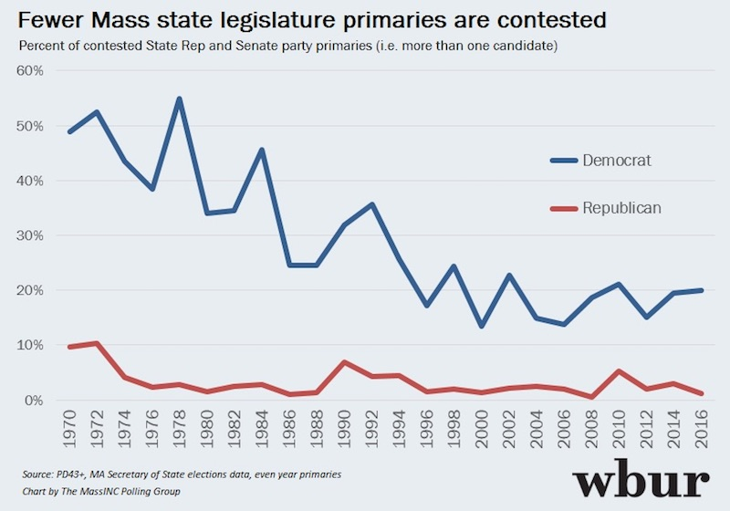

2017-03-26 08:00
Democracy is in decline – and it’s partly because some of us are reclining in our La-Z Boy chairs too damn much.
If you’re a Dartmouth voter, press that lever on the side of the chair and it will propel you into an upright and standing position. From there walk or drive to your nearest polling station.
The 2017 Annual Town of Dartmouth Election is Tuesday, April 4, 2017. Polls will be open from 7:00am - 8:00pm.
In some past town elections, voter turnout has been less than 11 percent. Voter apathy is as deadly as lack of electoral choice. But electoral choice depends on you voting. In Massachusetts we are having somewhat of a crisis. Fewer and fewer elections are being contested:

In my precinct (see ballot below) this is certainly true.
There are really only two contested elections on the entire ballot:
In all the rest there is really nothing to vote for. It’s like a North Korean election – a single candidate or slate:
And it gets worse. There is even one contest that didn’t even have a candidate:
For those taking the Select Board election seriously, here is a report from of a recent “Candidate night”: http://dartmouth.villagesoup.com/p/candidates-speak-at-public-forum-ahead-of-town-elections/1634169
And here is the real reason you should get out and vote – the ballot question:
“Shall the Town of Dartmouth be allowed to exempt from the provisions of proposition two and hone-half, so called, the amounts required to pay for the bond issued in order to design and construct a new police station to be located on town-owned property at 1390 Tucker Road, including originally equipping said building, paving, and all other costs incidental and related thereto?”
In other words – should the town pay for the new police station with a temporary tax rate increase?
Well, what voter knows how much money the bond actually represents? Or what the exemption means legally? Or who even knows what Proposition 2-1/2 is? Or what the current tax rate is?
I will wager that many voters will reject this question simply due to its opacity and ridiculous legalese. But here are a few details:
The police station will cost $13.6 million. Cops can’t work out of trailers forever. Taxpayers have to pony up for roads and schools – and police stations. You get what you pay for.
If you’re too cheap to pay, you don’t get anything but bad roads, bad schools, and cops who can’t do their job.
Paying taxes – like voting – is just another cost of keeping society and government running.